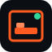

Not wired into the app yet. Each mark is shown at 64px and 24px (favicon scale).
For Your Hair / Salon SaaS Bottle-green + brass scissors — sales-page language, not the purple FY monogram.

Awesome PG (customer) Room + bed + availability dot — grounded in bed booking, not a generic house.APG OS (PG admin) Shield + A — operations/admin for the PG product.Platform Admin (parent SaaS) Neutral structural nodes — multi-tenant system behind the products.Automotive Capital Rising ledger bars — portfolio/growth.Owner OS / Wealth Net-worth dial — currently has no dedicated mark in the codebase.
Open this file via /brand-concepts/ on a running app, or open the SVGs directly in the repo under public/brand-concepts/.